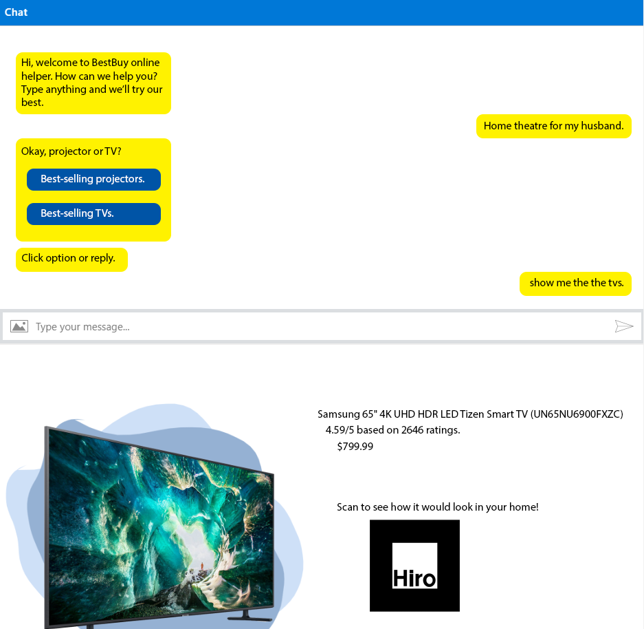

- A virtual assistant and AR product visualization application for BestBuy.com. Recognizes queries and provide products.
- Implemented the bot in JavaScript and NodeJS. Trained query recognition and response with Microsoft's bot framework and Azure.
- Reverse-Engineered BestBuy.com's landing page and integrated the chat bot with React, HTML and CSS.
- Parsed user input and bot response as inputs to the BestBuy developer API and return relevant info.
Built during BizHacks 2020, where we placed as a finalist!